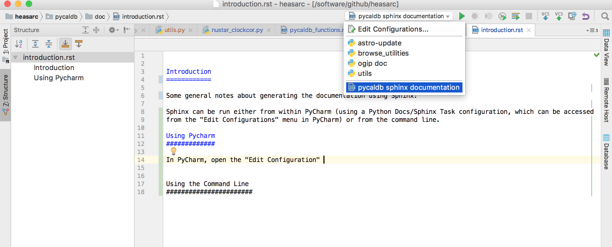
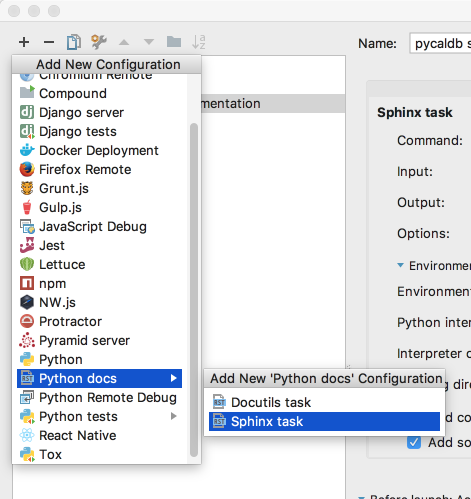
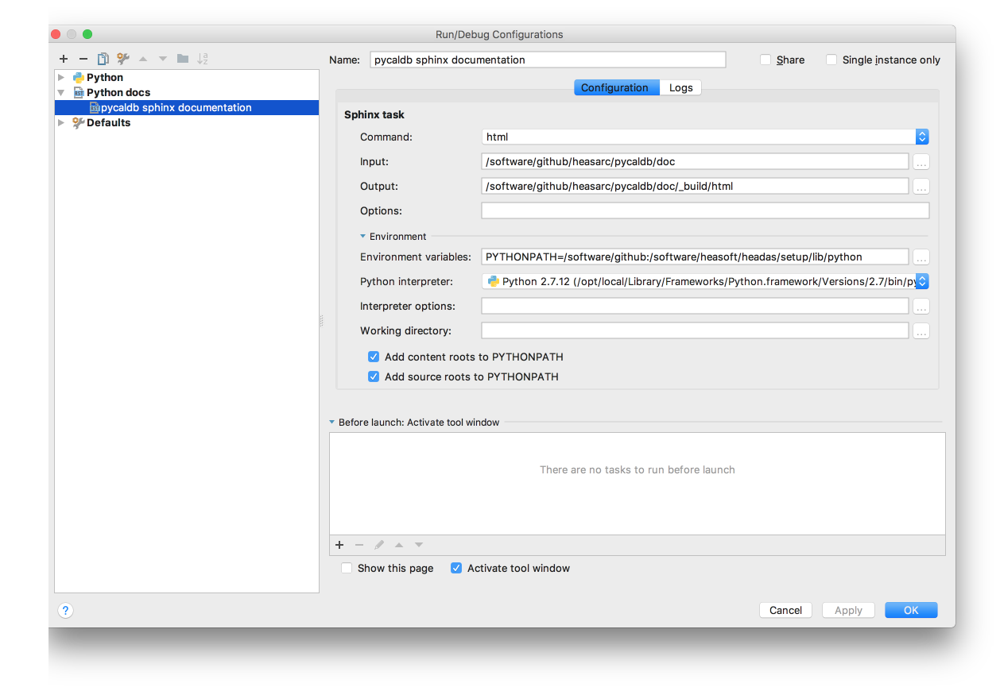

Introduction: Developing pycaldb Documents using Sphinx¶
Some general notes about generating the pycaldb documentation using Sphinx and automodule (it can be a bit tricky specifying the path and module name in order to get automodule to actually find the module to automatically include the module in the list of functions document). This information is useful for generating documentation for other packages as well.
Sphinx can be run either from within PyCharm (using a Python Docs/Sphinx Task configuration, which can be accessed from the “Edit Configurations” menu in PyCharm) or from the command line.
Using Pycharm¶
In PyCharm, open the “Edit Configuration” menu to edit a configure
Then click the plus (+) sign to add a new configuration for a Python Doc/Sphinx Task:
The filled out Sphinx Task configuration for pycaldb looks like
where
Command- set to “html” for html outputInput- choose the directory where the .rst files are located (as set up when you do a “Sphinx Quickstart”, which you can find under the PyCharm “Tools” menu- the output should be a subdirectory of _build (for example _build/html to put the html files under the html directory)
- IMPORTANT - add the appropriate python module path to PYTHONPATH so “automodule” can find the python module.
- For pycaldb, set:
PYTHONPATHto /software/github:/software/github/heasarc:/software/heasoft/headas/setup/lib/python
because /software/github needed to allow import of heasarc.utils; /software/github/heasarc needed to allow import of pycaldb module; and /software/heasoft/headas/setup/lib/python needed to allow import of pyxspec (actually the xspec module) from HEASOFT
then set
automoduleas.. automodule:: pycaldb :members:
so that sphinx will look for the pycaldb module directory in the /software/github/heasarc/ directory (as specified in the PYTHONPATH)
and load the file pycaldb.py within the pycaldb directory
NOTE the above assumes that the heasarc/pycaldb/__init__.py file is empty (no imports are included in the file); or at least the above works if that init file is empty. There are complex interactions between the PYTHONPATH and the init file that I don’t quite understand; I need more investigation of how the __init__.py file is really used…
Using the Command Line¶
Sphinx Quickstart creates a Makefile in the doc directory for you to make compilation easier. The command to create the html form of the documentation is:
% cd /software/github/heasarc/pycaldb/doc
% make html
To get automodule to work you need to edit the conf.py file and make sure the python package is added to the path. For pycaldb uncomment the import os, import sys and the sys.path.insert lines like so:
import os
import sys
sys.path.insert(0, os.path.abspath('/software/github/heasarc'))
and insert the appropriate path to the module.